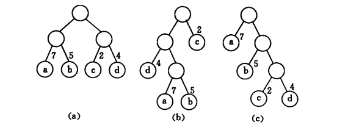
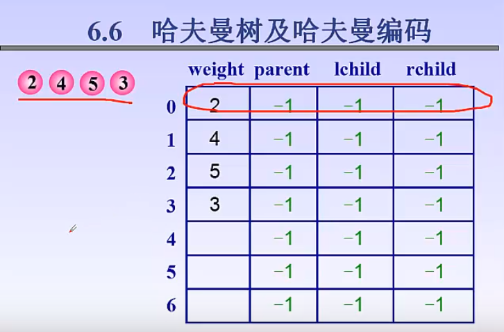
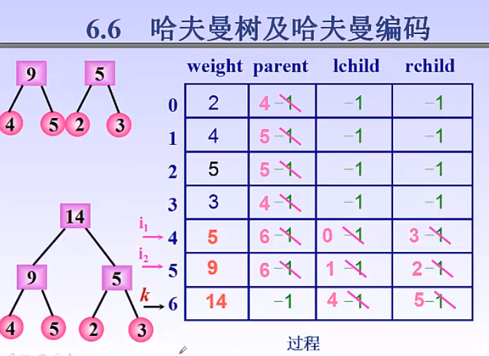
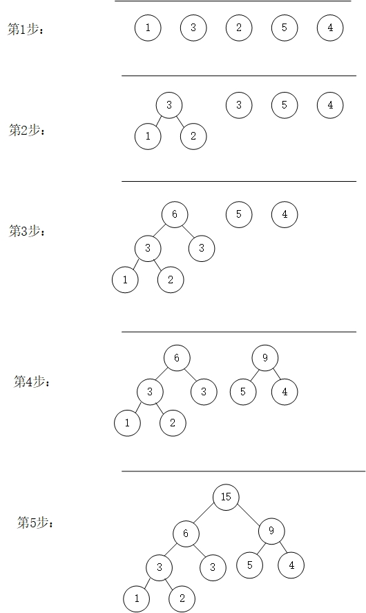
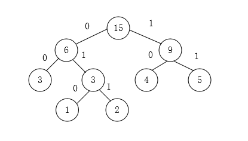

1、一些基本概念
1.1、定义
哈夫曼树，又称最优树，是一类带权路径长度最短的树(为了防止前缀重复，所有数据一定为树叶)。
1.2、路径和路径长度
从树中一个结点到另一个结点之间的分支构成两个结点的路径，路径上的分支数目叫做路径长度。树的路径长度是从树根到每一个结点的路径长度之和。
1.3、带权路径长度
结点的带权路径长度为从该结点到树根之间的路径长度与结点上权的乘积。树的带权路径长度为树中所有叶子结点的带权路径长度之和，通常记作WPL。
若有n个权值为w1,w2,…,wn的结点构成一棵有n个叶子结点的二叉树，则树的带权路径最小的二叉树叫做哈夫曼树或最优二叉树。

在上图中，3棵二叉树都有4个叶子结点a、b、c、d，分别带权7、5、2、4，则它们的带权路径长度为
（a）WPL = 7 × 2 + 5 × 2 + 2 × 2 + 4 × 2 = 36
（b）WPL = 4 × 2 + 7 × 3 + 5 × 3 + 2 × 1 = 46
（c）WPL = 7 × 1 + 5 × 2 + 2 × 3 + 4 × 3 = 35
其中（c）的WPL最小，可以验证，（c）恰为哈夫曼树。
2、数据结构表示
2.1、结点表示
1
2
3
4
5
| typedef struct{
int weight;
int parent;
int lchild,rchild;
}HuffmanTreeNode;
|
2.2、一些数据关系
1、哈夫曼树除了根结点，其他结点度数都为2
2、m=2n-1(m代表总结点个数，n代表树叶结点个数)
证明:
因为 结点总数=度数为0 1 2之和=度数为1+ 2度数为2 +1（根节点）
所以 叶子结点数=度数为2的结点数+1
所以total=叶子+度数为2=2*n-1 得证
2.3、初始状态

2.4、最终状态

3、创建哈夫曼树步骤

假设有n个结点，n个结点的权值分别为w1,w2,…,wn，构成的二叉树的集合为F={T1,T2,…,Tn}，则可构造一棵含有n个叶子结点的哈夫曼树。步骤如下：
（1）从F中选取两棵根结点权值最小的树作为左右子树构造一棵新的二叉树，其新的二叉树的权值为其左右子树根结点权值之和；
（2）从F中删除上一步选取的两棵二叉树，将新构造的树放到F中；
（3）重复（1）（2），直到F只含一棵树为止。
4、哈夫曼编码
我们约定左分支表示字符’0’，右分支表示字符’1’，在哈夫曼树中从根结点开始，到叶子结点的路径上分支字符组成的字符串为该叶子结点的哈夫曼编码。上面代码所创建的哈夫曼树如下所示：

可以看出3被编码为00，1为010，2为011,4为10,5为11。在这些编码中，任何一个字符的编码均不是另一个字符编码的前缀。
5、C++建立haffmanTree
1
2
3
4
5
6
7
8
9
10
11
12
13
14
15
16
17
18
19
20
21
22
23
24
25
26
27
28
29
30
31
32
33
34
35
36
37
38
39
40
41
42
43
44
45
46
47
48
49
50
51
52
53
54
55
56
57
58
59
60
61
62
63
64
65
66
67
68
69
70
71
72
73
74
75
76
77
78
79
80
81
82
83
84
85
86
87
88
89
90
91
92
93
94
95
96
97
98
99
100
101
102
103
| #include<iostream>
#include<stack>
#include<cstdlib>
#include<vector>
using namespace std;
typedef struct{
int weight;
int parent;
int lchild,rchild;
}HuffmanTreeNode;
int min(HuffmanTreeNode* &tree,int k){
int minnum,min_weight;
int i=0;
while(tree[i].parent!=-1)
i++;//先将第一个parent为-1的元素的weight值赋给min_weight,留作以后比较用。
min_weight=tree[i].weight;
minnum=i;
for(;i<k;i++)
{
if(tree[i].weight<min_weight&&tree[i].parent==-1)
{
min_weight=tree[i].weight;
minnum=i;
}
}
tree[minnum].parent=1;
return minnum;
}
void Select(HuffmanTreeNode * &tree,int k ,int & i1,int & i2){
i1=min(tree,k);
i2=min(tree,k);
}
void HaffmanTree(HuffmanTreeNode * & tree,int w[],int n){
for(int i=0;i<2*n-1;i++)
{
tree[i].parent=-1;
tree[i].lchild=-1;
tree[i].rchild=-1;
}
for(int i=0;i<n;i++)
tree[i].weight=w[i];
int i1,i2;
for(int k=n;k<2*n-1;k++)
{
Select(tree,k,i1,i2);//前K个找最小和第二小
tree[k].weight=tree[i1].weight+tree[i2].weight;
tree[i1].parent=k;
tree[i2].parent=k;
tree[k].lchild=i1;
tree[k].rchild=i2;
}
cout<<"建哈夫曼树成功:\n";
for (int i=0; i<2*n-1; i++) {
cout<<tree[i].weight<<" "<<tree[i].parent<<" "<<tree[i].lchild<<" "<<tree[i].rchild<<endl;
}
}
void ShowHaffmanCoding(HuffmanTreeNode* tree,int n){
int w=2*n-1;
vector<stack <char> >HuffmanCode;
stack<char>temp;
cout<<"debug1"<<endl;
//从结点开始找双亲
for(int i=0;i<n;i++){
cout<<"debug2"<<endl;
int j=i;
int parent= tree[i].parent;//找到双亲
while(parent!=-1)
{
if(tree[parent].lchild==j) temp.push('0');//如果是左孩子
else temp.push('1');//右孩子
int j=parent;
parent=tree[j].parent;//直到根结点结束
}
HuffmanCode.push_back(temp);
while(!temp.empty()) temp.pop();
}
for(int i=0;i<n;i++)
{
cout<<"第"<<i+1<<"个数的权值为 : "<<tree[i].weight<<" 编码为： ";
while(!HuffmanCode[i].empty())
{
cout<<HuffmanCode[i].top();
HuffmanCode[i].pop();
}
cout<<endl;
}
}
int main(){
cout<<"请输入权值个数n\n";
int n=0;
cin>>n;
int m=2*n-1;
HuffmanTreeNode * tree=(HuffmanTreeNode *)malloc(sizeof(HuffmanTreeNode)*m);
for(int i=0;i<m;i++){
tree[i].weight=tree[i].parent=tree[i].lchild=tree[i].rchild=0;
}
cout<<"请输入权值: \n";
int w[n];
for(int i=0;i<n;i++)
cin>>w[i];
HaffmanTree(tree,w,n);
ShowHaffmanCoding(tree,n);
}
|